Introduction
Motivation and Research Question
Movies are one of the most important cultural products with increasing demand (Lee and Chang, 2009). Beyond entertainment, movies also take the form of serious art with profound social and philosophical reflections. Demand for specific movies is often hard to predict despite overall increasing demand. To understand how the movie industry operates and the specific factors that impact consumer preference for movies, we decided to analyze the US box office dataset and study what factors are most related to box office performance from the industry’s perspective.
Data
Data Source
Our group is using the boxofficemojo dataset from Kaggle. The dataset contains movie data from the US box office from January 1990 to April 2020. The author, Igor Kirko, scraped movies from the boxofficemojo website that had a budget listed, a US MPAA rating, and is available in English.
Data Scraping & Cleaning
In our initial assessment of the data, we knew that we would need more variables for our analysis. We specifically were looking for data about the movie’s rating by the community to see if it affected its box office revenue. In 2008, Amazon purchased boxofficemojo through its subsidiary IMDB, so the two databases share the same movie codes. This allows us to utilize rating data from the IMDB website and join it with the boxofficemojo dataset.
To clean our dataset, we dropped all variables that would have little to no effect on box office revenue (e.g., the movie’s cinematographer, composer, and run time). We also created indicator variables such as “HolidaySeason” to determine whether or not a movie was released during what we defined as the holiday season, and “director_power,” which finds out whether a movie’s director is in the top 100 grossing directors for the worldwide box office. In total, we have 2821 movies in our dataset.
More details about our variables can be found in the code book section of the appendix.
Data Visualizations
Dependent Variable
Our analysis uses domestic (total domestic box office revenue in millions) from our dataset as our dependent variable, which indicates a movie’s success.
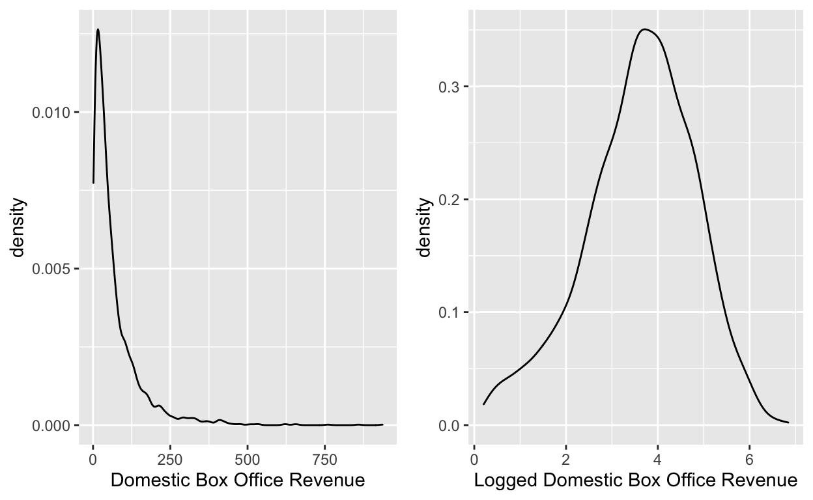
After evaluating the distribution of domestic box office revenue, we found that most movies generate around 70 million USD. However, the domestic box office revenue range varies from 1.228 million USD to 936.662 million USD, and the distribution is heavily right-skewed, so we decided to use the log-scale to normalize our curve.
We can see from the graph that the logged domestic box office revenue has a relatively normal distribution, centered around 3.75, which is roughly 42.5 million USD (\(e^{3.75}\)).
Quantitative Variables
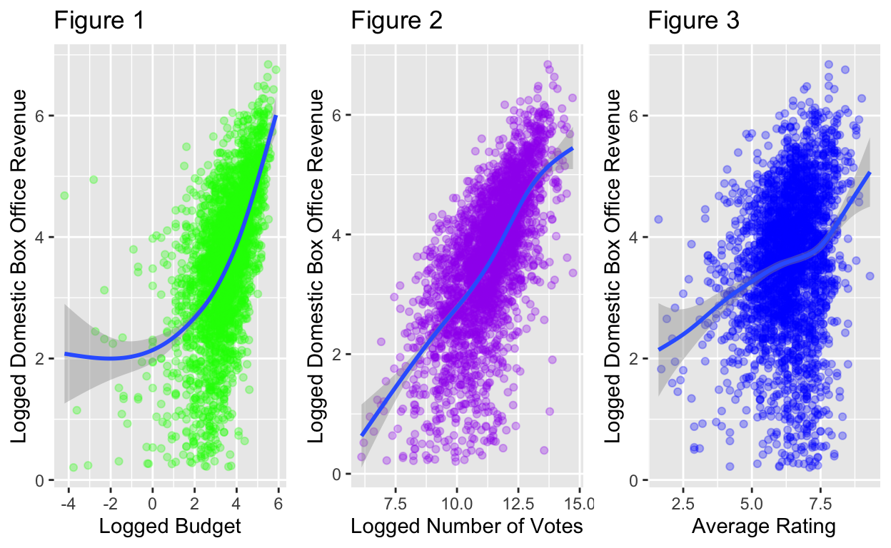
Our dataset has three quantitative variables: budget, number of votes, and average rating. We wanted to view their relationships with domestic box office revenue to see whether or not they affect it. To improve our visualization, we decided to use the logged budget and the logged number of votes of a movie to decrease the variability in these variables.
For our first two plots, we have a positive trend between logged budget and logged domestic box office revenue and between the logged number of votes of a movie and the logged domestic box office revenue. This means that as the logged budget or the logged number of votes increases, the logged domestic box office revenue will also increase. Our third plot does not show a clear relationship between the average rating of a movie and the logged domestic box office revenue.
Categorical Variables
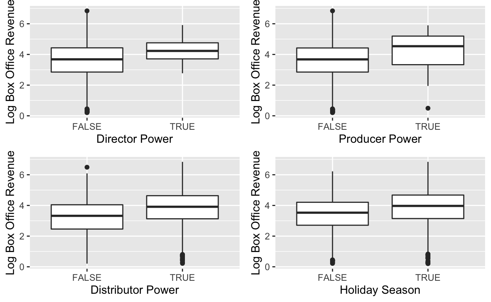
Our dataset has four indicator variables: director power, producer power, distributor power, and holiday season. We wanted to view their relationship with domestic box office revenue to see whether or not they affect it. To improve our visualization, we chose to use the logged domestic box office revenue to eliminate many of the outliers.
From the graphs, we can see that the four variables do not significantly impact domestic box office revenue. The variability of all the graphs is roughly the same.
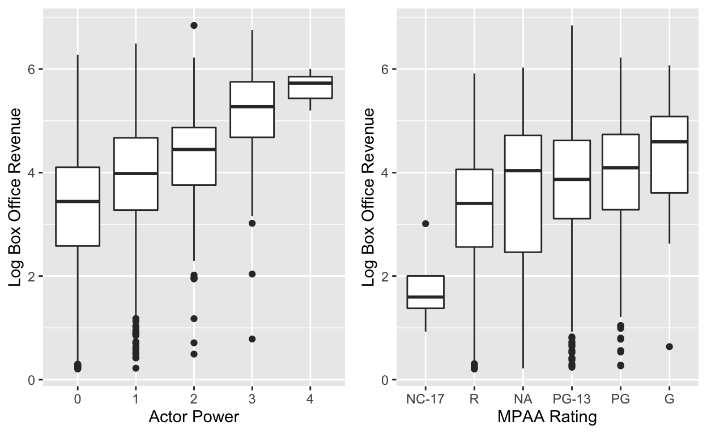
We have two categorical variables in our dataset with greater than two categories: actor power (0, 1, 2, 3, 4) and MPAA rating (NA, G, PG, PG-13, R, NC-17). We wanted to view their relationship with domestic box office revenue to see whether or not they affect it. To improve our visualization, we chose to use the logged domestic box office revenue to eliminate many of the outliers.
The graphs show that casting more actors or movies with a G MPAA rating tends to have a higher domestic box office revenue.
Bayesian Normal Regression Approach
Why This Approach?
Our dependent variable is quantitative and bell-shaped
Incorporate our prior knowledge into our model
Goals
We are going to create two Bayesian Normal regression models to try and predict the logged domestic box office revenue. For our first model, we hope to create a model that accurately predicts the logged domestic box office revenue solely with the logged budget. For the second model, we added the variables from the data visualization section above that we believe will affect the logged domestic box office revenue.
Model 1
For our first model, we will examine the relationship between the logged budget of a movie and its logged domestic box office revenue. Intuitively, we think the budget will play an essential role in the success of a movie.
Building the Model
To model response variable Y, the logged domestic box revenue, by predictor X, the logged budget, we collected data from 2821 movies. Let \((Y_i, X_i)\) denote the observed data on each movie \(i \in \{1, 2, ..., 2821\}\).
\[\begin{gather} Y_i| \beta_0, \beta_1,\sigma\sim N(\mu_i, \sigma^2) \text{ where } \mu_i = \beta_0+\beta_1X_i\\ \beta_{0c} \sim N(m_0, s_0^2)\\ \beta_1 \sim N(m_1, s_1^2)\\ \sigma \sim Exp(l) \end{gather}\]
- \(\sigma\) measure the typical deviation of an observed Y from the regression line \(\beta_0+\beta_1X_1\).
Prior Analysis
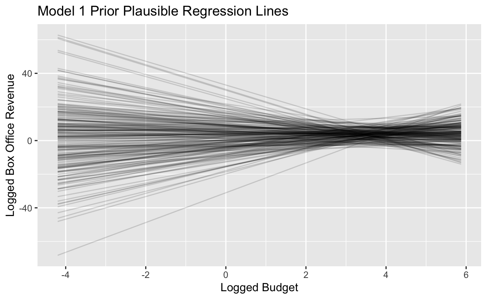
The slopes of the prior plausible regression lines are both positive and negative, and the intercepts are quite varied. The priors that we have are uninformative.
Posterior Analysis
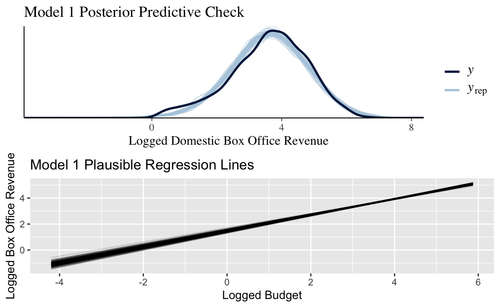
The model accurately captures the shape and the range of the data. Also, there is much more certainty when looking at our plausible regression lines, as all of the slopes and intercepts are roughly the same.
Model 2
For our second model, we are going to examine the relationship between the logged budget of a movie, the distributor’s power, the director’s power, the producer’s power, the logged average rating of a movie, the logged number of votes for a movie, the sum of the actor’s power, whether or not the movie was released during the holiday season, the movie’s MPAA rating, and the logged domestic box office revenue.
Building the Model
To model response variable \(Y\), the logged domestic box revenue, by predictor \(X_1\), the logged budget, \(X_2\), distributor_powerTRUE, \(X_3\), director_powerTRUE, \(X_4\), the logged average rating, \(X_5\), the logged number of votes, \(X_6\), A_power1, \(X_7\), A_power2, \(X_8\), A_power3, \(X_9\), A_power4, \(X_{10}\), HolidaySeasonTRUE, \(X_{11}\), mpaa_factorNA, \(X_{12}\), mpaa_factorNC-17, \(X_{13}\), mpaa_factorPG, \(X_{14}\), mpaa_factorPG-13, \(X_{15}\), mpaa_factorR, \(X_{16}\), producer_powerTRUE, we collected data from 2821 movies. Let \((Y_i, X_{ip})\) denote the observed data on each movie \(i \in \{1, 2, ..., 2821\}\) for each predictor \(p \in \{1, 2, ..., 16\}\).
\[\begin{gather} Y_i| \beta_0, \beta_1,\beta_2, ...,\beta_{16},\sigma\sim N(\mu_i, \sigma^2) \text{ where } \mu_i = \beta_0+\beta_1X_{i1}+\beta_2X_{i2}+...+\beta_{16}X_{i16}\\ \beta_{0c} \sim N(m_0, s_0^2)\\ \beta_1 \sim N(m_1, s_1^2)\\ \beta_2 \sim N(m_2, s_2^2)\\ \vdots\\ \beta_{16} \sim N(m_{16}, s_{16}^2)\\ \sigma \sim Exp(l) \end{gather}\]
\(\sigma\) measure the typical deviation of an observed Y from the regression line \(\beta_0+\beta_1X_1\).
We interpret \(\beta_0\), -2.194 (which equates to roughly 54,258 USD), as the estimated logged domestic box office revenue when a movie has a logged budget of 0, does not have a top 10 distributor, does not have a top 100 grossing director, does not have a top 100 grossing producer, has a logged average rating of 0, has no logged votes, has no actors with a previous box office movie, was released outside of the holiday season, and is rated G. Prior Analysis
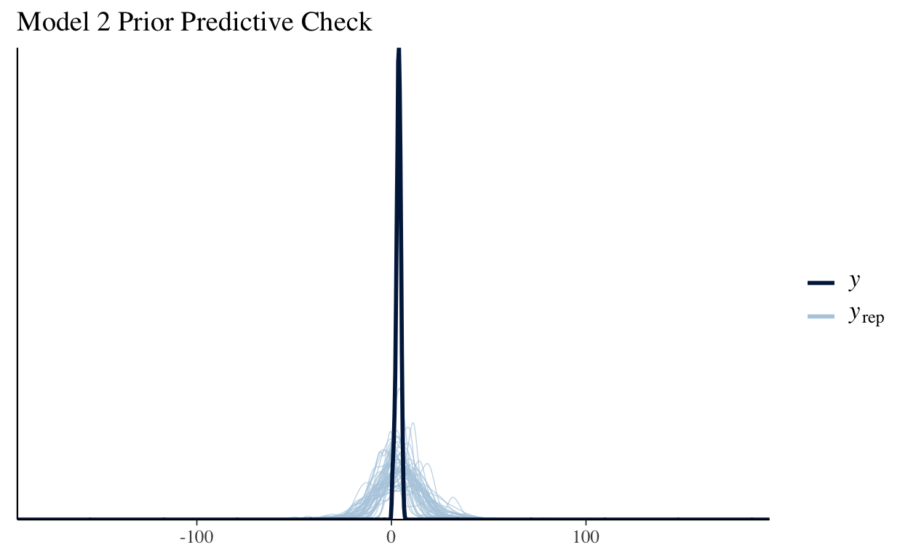
From the graph, we can see the the prior predictive check has a much wider range than the data, and it fails to capture the shape of the data. Thus the priors are vague.
Posterior Analysis
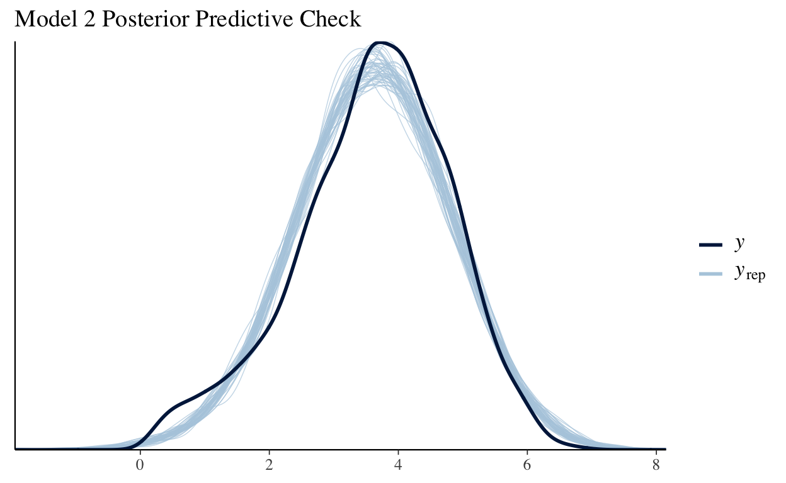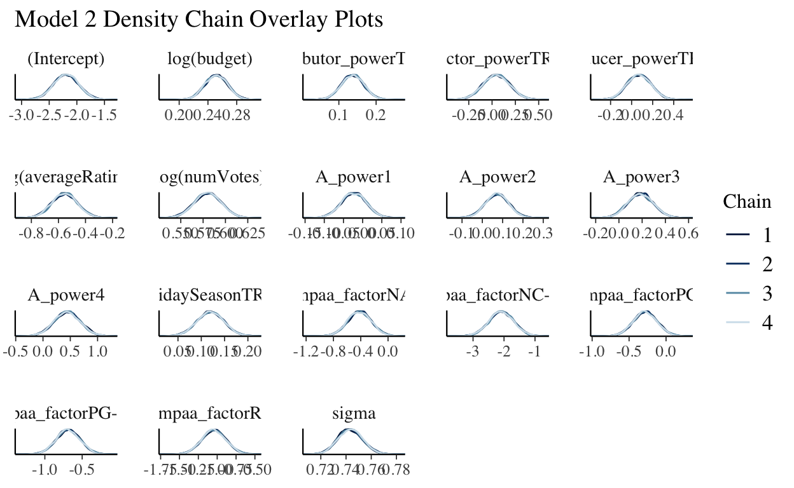
The posterior predictive check accurately captures the normality and the observed range of the logged domestic box office revenue while the density chain overlay plots produce similar output.
Model Comparison
Now, we are going to compare these two models by using expected log-predictive density (ELPD), which measures the average log posterior predictive pdf, \(log(f(y_{new}|\vec{y}))\), across all possible new data points \(y_{new}\) (Johnson, Ott, Dogucu).
loo_model_1 <- loo(model_1)
loo_model_2 <- loo(model_2)
c(loo_model_1$estimates[1], loo_model_2$estimates[1])
[1] -3959.588 -3174.781loo_compare(loo_model_1, loo_model_2)
elpd_diff se_diff
model_2 0.0 0.0
model_1 -784.8 41.7 The posterior predictive accuracy of model 2 is significantly greater than that of model 1 as the ELPD of model 2, -3174.781, is greater than the ELPD of model 1, -3959.588, and because the difference in the ELPD model 2 and the ELPD of model is at least two standard errors below 0.
Bayesian Network Approach
Introduction
In our Bayesian normal regression, our task was to predict the box office of any given movie. However, regression tasks cannot be used to draw any causal inference, nor are we informed on the interaction or inter-relations between the variables. In our data context, the causal relationships among different variables are intricate and complicated - director power, actor power, budget, and other factors could impact each other, and we do not know if the box office is directly or indirectly determined by just a subset of the variables or all of them. We moved beyond regression to graphical probabilistic tools such as Bayesian belief networks to gain more such information.
What are Bayesian Networks?
Bayesian networks are graphical models (Korb and Nicholson 2004)
nodes represent random variables
arrows represent probabilistic dependencies between them
The graphic structure $ = (, A) $ of a Bayesian network is a directed acyclic graph (DAG), where \(V\) is the node set and A is the arc set.
DAG defines a factorization of the joint probability distribution, this is the notation for discrete random variables.
\[P(X_1, ..., X_v) = \prod^{v}_{i=1}P(X_i |Π_{X_i}) \]
A detailed explanation of Bayesian Network
Bayesian Belief Network(BBN) is a graphical probabilistic model that specializes in deriving inferences on the causal relationships between different variables. BBN is a natural advancement of the Naive Bayes classifier, which assumes that all variables are independent. In reality, this is often not a fair assumption to make, as the variables are oftentimes correlated. However, it is also likely intractable to obtain exact causal inference of every possible pair of variables. BBN’s advantage is that it builds upon a computationally more efficient directed acyclic graph for modeling networks of causality, thus achieving higher predictive accuracy and more sensible interpretation of relationships between variables.
A BBN graph consists of two central elements: nodes and arcs. Each node represents a random variable, and each directed arc represents causality. Absence of arc represents (conditional) independence. An example of a BBN graph is given below.
Of all variables, bad weather and a bad headache do not have any parent nodes, and are thus independent from each other. Other variables are all somewhat related and dependent, and it would be wrong to use a Naive Bayes classifier to determine if one would fail the exam by all other variables. One key concept to BBN is conditional independence: each note is conditionally independent of its non-immediate descendents. For example, typically, if you have slept over the alarm clock, you are likely to miss and thus fail the exam. However, given certain information that you have arrived at school on time, sleeping over the alarm doesn’t necessarily have anything to do with whether you would fail the exam. This in general provides a much more sensible interpretation of variable relationships than arbitrarily determining that all variables potentially equally contribute to the outcome.
Usually, on a given matter, we can rely on expertise or prior knowledge to design the BBN model architecture, which could be both advantageous and disadvantageous depending on dimensionality. While BBN is generally good in modeling causality, the model cannot depict cyclic or mutual relationships, which might still be problematic in some settings. For example, if failing the exam might bring you a headache and we draw a causal arc from failing the exam back to a bad headache, then BBN would crash as there’s a Headache->SleepOverAlarm->FailTheExam->Headache cyclic graph. In our data context of determining movie success, this actually could be one of the concerns: oftentimes, the producer/director/actor success and movie success are much correlated with mutual causality: good directors could make great movies with good box office; or people see a movie and thus make the actors/directors rank higher.

Why we chose this approach?
Easily reflect domain knowledge and can simply notice cause and effect (Antal, Fannes, Timmerman, Moreau, & De Moor, 2004; Aronsky & Haug, 2000)
Look at interdependencies (patterns of connections and effects), which means they do not face problems with over-parameterization in regression (adversely affected by adding extra variables).
Good at dealing with missing data. Because networks are based on how variables align with each other, they will use any information that is available
What is the purpose of learning the structure?
- helps in learning the dependency structure relative to variables in a domain
- estimate the statistical model of the underlying distribution
Bayesian network structure learning algorithms
- Fitting BN models
Maro Scutari(2020), the author of bnlearn R package, outlined the process of fitting a bayesian network into two main steps: 1. Structural learning, which finds the directed acyclic graph that reflects the causality and conditional independence relations in the data; 2. Parameter learning, which estimates parameters of the global distribution. This could be derived from local distributions.
- Structural learning algorithm
A Bayesian network, \(\mathbb{G}=(\mathbb{V},A)\), where \(\mathbb{V}\) denotes nodes and \(A\) denotes arcs, can be shaped by expert knowledge or learned by data. There are generally two types of structural learning algorithms: score-based and constraint-based, though many hybrid approaches also use constraint-based learning to determine the approximate graph structure and use score-based algorithms to determine the best model. In this study, we will employ the hill-climbing algorithm, a greedy score-based algorithm.
2.1 Score-based algorithms
The underlying mechanism behind score-based algorithms is that they will give a score to each graphical structure to measure the compatibility of the data and the structure(Kuleshov & Ermon). There are many different score measures, but a general formula of score can be written as: \[Score(\mathbb{G},\mathbb{D})=L(\mathbb{G},\mathbb{D})-\psi(|\mathbb{D}|)|\mathbb{G}|\] where \(L(\mathbb{G},\mathbb{D})\) represents the likelihood(often logged) of data, \(|\mathbb{D}|\) represents the data sample size, and \(|\mathbb{G}|\) denotes the number of parameters in the given structure. Overall, \(\psi(|\mathbb{D}|)|\mathbb{G}|\) is a penalty term that penalizes overly complex structures, thus preventing overfitting of the data. One common choice of score is to take the penalty term as \(\frac{|\mathbb{D}|}{2}\ln|\mathbb{G}|\), which is known as the Bayesian Information Criteria(BIC). A score-based method attempts to find the network structure that maximizes the score or finds the structure most compatible with the data.
However, to run the score-based approach through all possible structures is computationally infeasible in all but the most trivial data samples. For a potential structure with \(p\) variables, a thorough search of all possible networks requires \(2^{p(p-1)/2}\) calculations (you can draw \(p(p-1)/2\) lines in a network, and two possible directions for each line). To reduce computational expense, a heuristic search is necessary. Hill-climbing (HC) is one of the most popular learning approaches in artificial intelligence, which employs a recursive process that seeks the local optimum at each iteration. In the Bayesian network learning setting, HC starts with a random possible network and tries all modified networks by a single edge change: addition, deletion, or reversal. HC chooses the model with the highest score of all modified networks and then repeats the iterative process unless no modified networks could increase the score. A toy example of one HC iteration is shown below.
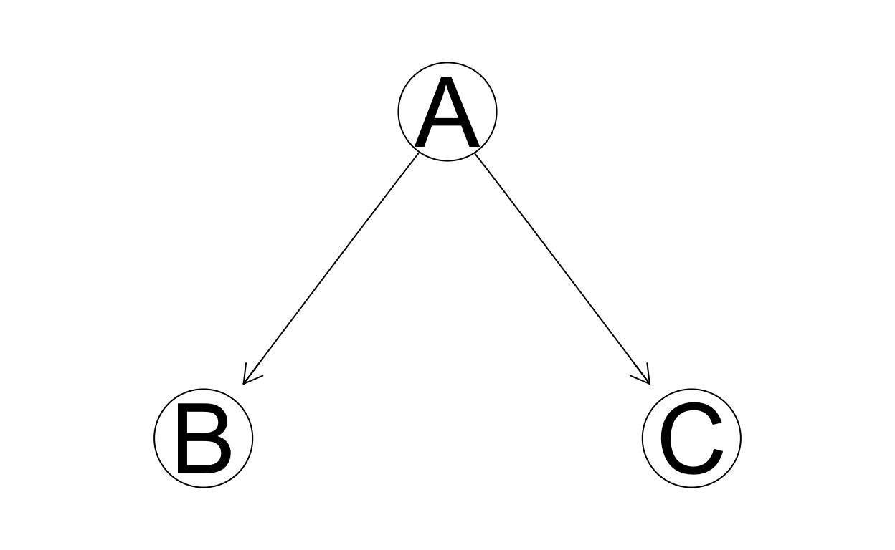
Assume we have three predictors. We start with a random initial network shown above, which is characterized by a reverse v-structure(which will be explained later), where A is the parent node of two conditionally independent leaf nodes B and C. To perform one entire HC iteration, we list all possible networks after one edge modification.
- Reversal:
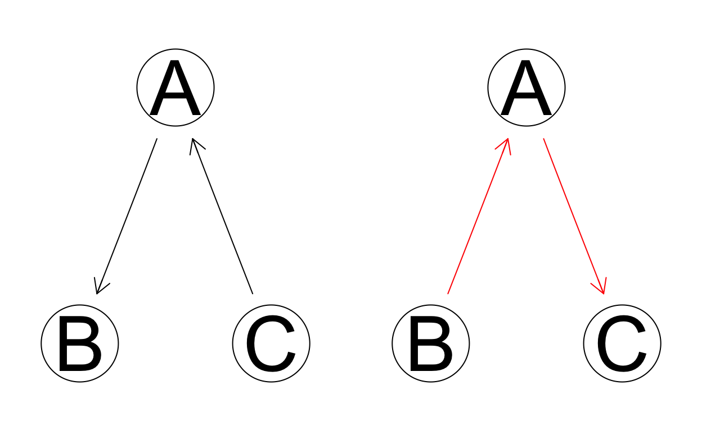
- Addition:
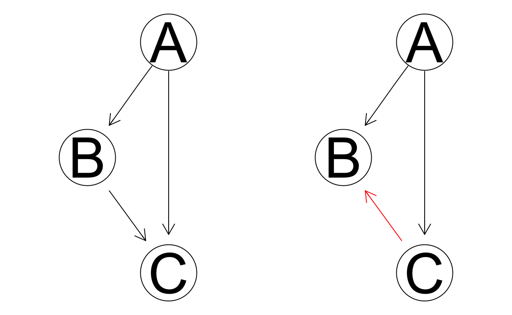
- And deletion:
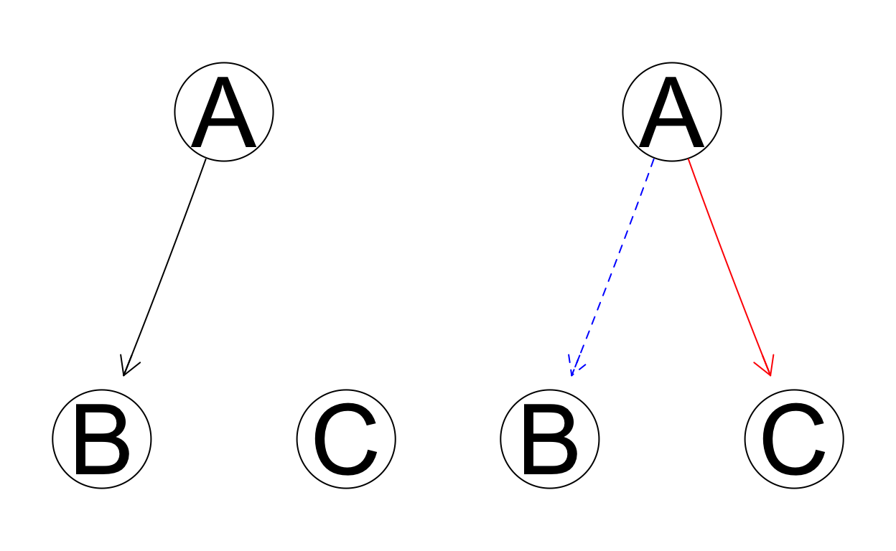
We then record the chosen score for each of the six new modified networks and the original initial state. If any modified network can improve the score, we choose the new network with the best score and start another iteration; if no modification improves the score, we settle for the old network.
As a heuristic search, HC does not guarantee to find the global best network and only seeks the local optimum. As the initial starting network is random, the resulting network structure might be slightly different each time you run HC function.
2.2 Constraint-based algorithms
The constraint-based approach to network learning was established by the seminal work of Verma and Pearl(1991). The algorithm is roughly summarized in three steps:
Learning neighbors. For every possible pairs of nodes \(X_i\) and \(X_j\)(\(i\neq j\)), search for a separating set \(S_{ij}\) such that given \(S_{ij}\)(including \(\emptyset\)), \(X_i\) and \(X_j\) are conditionally independent. If such a set does not exist, an undirected arc is placed between \(X_i\) and \(X_j\). After this step is done, we check for neighbor symmetry. That is, if \(X_i\) is \(X_j\)’s neighbor, then \(X_j\) must also be \(X_i\)’s neighbor. If this is not the case, we drop the arc.
Examining v-structure. A V-structure is defined by a triplet of nodes, incident on a converging connection, shown in the example below.
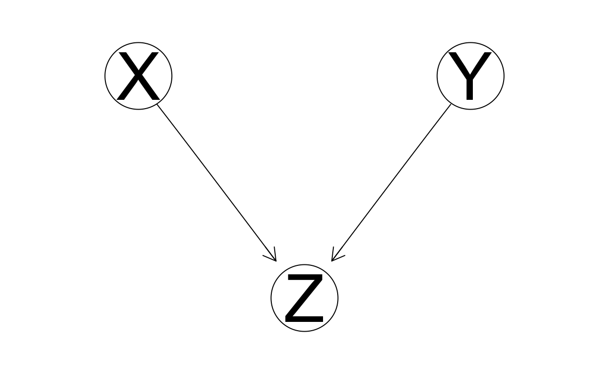
For each pair of non-adjacent nodes \(X_i\) and \(X_j\) that has a common neighbor \(X_k\), if \(X_k\) is in the separating set \(S_{ij}\), then we set the direction of arcs \(X_i \rightarrow X_k\) and \(X_i \rightarrow X_k\) to obtain a v-structure.
- Completing the DAG. This step calls for a logical deduction of arc direction for those undirected arcs to satisfy the acyclicity requirement. Scutari(2020) outlines the recursive steps: a. If \(X_i\) and \(X_j\) are adjacent, and if there is a strict directed path from \(X_i\) to \(X_j\), then place \(X_i\rightarrow X_j\). b. If \(X_i\) and \(X_j\) are not adjacent, but \(X_i\rightarrow X_k\) and there’s an undirected arc from \(X_k\) to \(X_j\), then set \(X_k\rightarrow X_j\).
The network learned by constraint-based algorithms may contain some undirected arcs. Central to constraint-based network learning is the concept of conditional independence test and the Markov blanket. \(X_i\) and \(X_j\) are conditionally independent given \(X_k\), denoted by \(X_i ⊥ X_j | X_k\), if and only if \(P(X_i,X_j|X_k)=P(X_i|X_k)P(X_j|X_k)\). The most popular conditional independence tests are mutual information tests (for discrete) and exact Student’s t-tests.
Markov blanket is often used to reduce computational expense. From the summarized outline of constraint-based algorithms, we can see that it is the first step that asks for a search of every possible separating set for every possible pair of nodes that contains most of the computing process. To effectively reduce this process, we often limit our search of separating sets only among the Markov blanket of the two nodes. A Markov blanket of a variable \(X_i\), \(\mathbb{B}(X_i)\), refers to the subset of variables in \(\mathbb{V}\) that graphically separates \(X_i\) from any other nodes, or in notation, \(X_i ⊥ \mathbb{V}\backslash\{X_i,\mathbb{B}(X_i)\} | \mathbb{B}(X_i)\). In Bayesian network specifically, the Markov blanket is identified by the parents, children, and spouses. In the example graph below, for node E, the Markov blanket contains: its parents, B and C; its children or immediate descendants, G; and its spouse, F, with whom it shares a common children node, G. A and D are part of the Markov blanket of E. Markov blankets could greatly improve the efficiency of the algorithms as not all variables are entirely relevant in making statistical inferences.
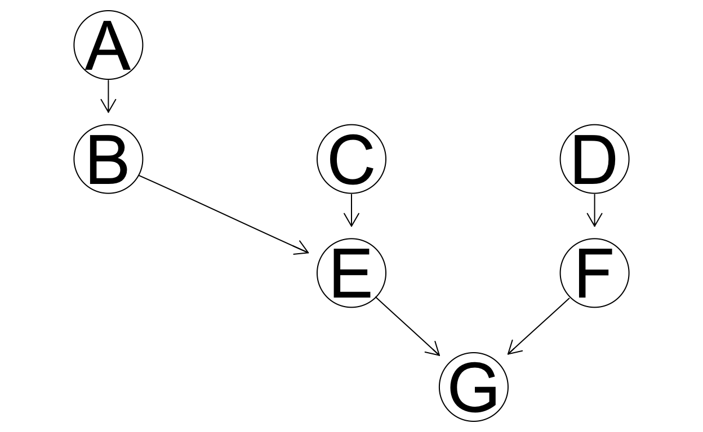
Analysis
Because Bayesian network works best with discrete data, we categorize our quantitative continuous variables into 3 categories by using quantile. Data wrangling process will be shown in the appendix.
We have 11 categorical variables in total
5 of them are Boolean variables(HolidaySeason/producer_power/director_power/distributor_power/genre_power)
3 of them with 3 levels which are High, Medium and Low.(domestic_cut/budget_cut/numVotes_cut)
A_power has 5 categories(0/1/2/3/4) where representing how many influential artists appeared in the main cast of 4
mpaa has 6 categories(1/2/3/4/5/NA) which includes (insert here)
averageRating_round has total 7 levels coresponding with the rounded rating score
Incorporating prior knowledge
Following Lee and Chang(2009), we incorporate our prior knowledge of the system under study into the model selection process. The prior knowledge is shown in the graph below with certain modifications.
 From Lee and Chang(2009)
From Lee and Chang(2009)
We will split our 11 categorical variables into four blocks:
Box-office performance(domestic_cut)
Production(mpaa/budget_cut/A_power/director_power/producer_power/genre_power)
Distribution(distributor_power/HolidaySeason)
Exhibition (numVotes_cut/averageRating_round)
We will restrict the model selection process by blacklisting arcs that point from a later to an earlier block.
Box office revenue cannot influence production, distribution and exhibition
Production can only influence Distribution and Exhibition
Distribution can only influence exhibition
## Incorporate subjective prior
# Box office revenue cannot influence production, distribution and exhibition
blacklist_1 = tiers2blacklist(list(c("mpaa", "budget_cut", "A_power", "director_power", "producer_power", "genre_power", "distributor_power", "HolidaySeason", "numVotes_cut", "averageRating_round"), "domestic_cut"))
#Distribution can only influence exhibition
blacklist_2 = tiers2blacklist(list(c("numVotes_cut", "averageRating_round"), c("distributor_power", "HolidaySeason")))
#Production can only influence Distribution and Exhibition
blacklist_3 = tiers2blacklist(list(c("mpaa", "budget_cut", "A_power", "director_power", "producer_power", "genre_power"), c("numVotes_cut", "averageRating_round", "distributor_power", "HolidaySeason")))
bl = rbind(blacklist_1, blacklist_2, blacklist_3)
Hill climbing algorithm
We chose to use Hill Climbing algorithm in our analysis.
Network 1: Without prior Knowledge Without Blacklisting arcs
bn_net0 <- hc(imdb_movies_discrete)
graphviz.plot(bn_net0)
na = narcs(bn_net0)
# Check out the network
bn_net0

Network exploration
# Check out the Arc Strength
arc.strength(bn_net0,imdb_movies_discrete) %>%
arrange(desc(strength))
from to strength
1 numVotes_cut director_power -3.815918
2 budget_cut A_power -10.690161
3 A_power producer_power -22.731520
4 numVotes_cut A_power -26.889533
5 mpaa numVotes_cut -32.786270
6 HolidaySeason domestic_cut -33.785634
7 budget_cut genre_power -51.000243
8 budget_cut mpaa -86.250768
9 budget_cut distributor_power -124.445162
10 numVotes_cut averageRating_round -407.358472
11 domestic_cut budget_cut -429.056293
12 domestic_cut numVotes_cut -627.306396As the HC algorithm has a random initial model, the HC function in the bnlearn package might produce a different network each time it runs. To test for network stability, we run the algorithm 1000 times and see how the models differ from each other. This is shown in the graph below. The stronger the arc color is, the more often such arc is existent in the bootstrap network samples.
#checking for stability by bootstrapping
boot<-boot.strength(imdb_movies_discrete,R=1000, algorithm = "hc")
qgraph(boot)

This network is not ideal, as the only root node is HolidaySeason, which is also the only parent node to our intended outcome is domestic_cut. As we expected, there is a lot of reverse causality within the variables. To make box office prediction the primary goal, we potentially need to blacklist some relationships and reverse some arc directions manually.
Network 2: With Prior Knowledge With Blacklisting arcs
bn_hc <- hc(imdb_movies_discrete, blacklist=bl)
graphviz.plot(bn_hc)
na = narcs(bn_hc)
bn_hc

This network has 11 nodes and 12 directed arcs. There are 139 tests used in the learning procedure. As a modification from the network without blacklisting, domestic cut is now one of the leaf nodes with two immediate parents: budget cut and numVotes_cut.
Compare two Bayesian Networks
These two networks contain different arc sets. Five arcs appear in the DAG learned by the Hill-Climbing algorithm, both with and without blacklist. Additionally, seven arcs appear in the DAG with blacklist, but not in the one without, and vice-versa.

We can see that the new network with blacklist make more sense intuitively compared with the last one.
Explaination of Bayesian information criterion
Bayesian information criterion (BIC) is a criterion for model selection among a finite set of models.
BIC attempts to resolve the problem of overfitting by introducing a penalty term for the number of parameters.
Model with lower BIC is preferred.
s1 <- score(bn_net0, data = imdb_movies_discrete, type = "bic")
s2 <- score(bn_hc, data = imdb_movies_discrete, type = "bic")
c(s1, s2)
[1] -22548.04 -22600.90Based on the network score, the DAG produced with the network with blacklist provides a slightly better fit to the data.
Fitting a BN model and Parameter estimate
The joint probability distribution of the model obtained with the hill climbing algorithm factorized according to:
P(A_power, producer_power, budget_cut, mpaa, HolidaySeason,director_power, distributor_power, genre_power, numVotes_cut, avereageRating_round, domestic_cut) = P(A_power)(producer_power|A_power)(budget_cut|A_power)(mpaa|budget_cut)(HolidaySeason|budget_cut)(director_power|producer_power)(distributor_power|budget_cut)(genre_power|budget_cut)(numVotes_cut|A_power, budget_cut)(domestic_cut|budget_cut,numVotes_cut)(averageRating_round|numVotes_cut)
# Fit the model
bn_model = bn.fit(bn_hc, imdb_movies_discrete)
# Check out the model coefficient for domestic_cut
coef(bn_model$domestic_cut)
, , numVotes_cut = low
budget_cut
domestic_cut low medium high
low 0.686520376 0.522988506 0.333333333
medium 0.310344828 0.465517241 0.615384615
high 0.003134796 0.011494253 0.051282051
, , numVotes_cut = medium
budget_cut
domestic_cut low medium high
low 0.420382166 0.167095116 0.028301887
medium 0.535031847 0.697943445 0.578616352
high 0.044585987 0.134961440 0.393081761
, , numVotes_cut = high
budget_cut
domestic_cut low medium high
low 0.139784946 0.029850746 0.000000000
medium 0.612903226 0.488805970 0.122093023
high 0.247311828 0.481343284 0.877906977domestic_cut is directly influenced by budget_cut and numVotes_cut. The coefficients represent the conditional probability distribution of domestic_cut. P(domestic_cut|budget_cut,numVotes_cut)
For example, in the third matrix, the coefficient “0.1398” is the conditional probability of domestic_cut being low, given high numVotes_cut and low budget_cut.
Making predictions of box office
As all variables are interconnected, once any specific information is given (and becomes our new prior), it could further impact all other nodes. Bayesian networks could be effectively used for prediction purposes.
In the first example shown below, given that a movie has strong director power and is released in holiday seasons, the Bayesian network predicts that the movie will have a 36% probability of being in the fourth quantile of the domestic box office.
In the second example shown below, given that we have high domestic box office, non-influential producer, and the holiday season release, the Bayesian network predicts that this movie is unlikely to have cast four influential actors/actresses.
set.seed(84735)
#predicting the domestic_cut
cpquery(bn_model,event=(domestic_cut=="high"),evidence=(director_power==TRUE& HolidaySeason==TRUE))
[1] 0.3673469#predicting Apower
cpquery(bn_model,event=(A_power==4),evidence=( domestic_cut=="high"&producer_power==FALSE&HolidaySeason==TRUE))
[1] 0.01098901
Appendix
References
Antal, P., Fannes, G., Timmerman, D., Moreau, Y., & De Moor, B. P. (2004). Using literature and data to learn Bayesian networks as clinical models of ovarian tumors. Artificial Intelligence in Medicine, 30, 257–281.
Bessler, D (2000). d-separation without Tears. Texas A&M University. Retrived from http://bayes.cs.ucla.edu/BOOK-2K/d-sep.html
Brufatto, Verena. “Bayesian-Networks/bayesian_networks.RMD at Main · Vettorefburana/Bayesian-Networks.” GitHub, 30 Nov. 2021, https://github.com/vettorefburana/Bayesian-Networks/blob/main/bayesian_networks.Rmd.
Chillar, Arush. “Bayesian Structure Learning.” Kaggle, Kaggle, 1 June 2021, https://www.kaggle.com/arushchillar/bayesian-structure-learning/notebook.
Elashkar, E. (2016). “Constraint Based Bayesian Network Structure Learning Algorithms, Using BNLearn R Package.” https://www.youtube.com/watch?v=4JkddqxGrO0
Johnson, A. A., Ott, M. Q., and Dogucu, M. (2021) Bayes Rules! An Introduction to Applied Bayesian Modeling. Retrieved from https://www.bayesrulesbook.com/
Kirko, Igor. “Boxofficemojo Dataset.” Kaggle, 26 Apr. 2020, https://www.kaggle.com/igorkirko/wwwboxofficemojocom-movies-with-budget-listed.
Korb K, Nicholson A (2004). Bayesian Artificial Intelligence. Chapman and Hall.
Kuleshov, V., Ermon, S. Structure Learning for Bayesian Networks. Stanford University. Retrieved from https://ermongroup.github.io/cs228-notes/learning/structure/
Margaritis D (2003). “Learning Bayesian Network Model Structure from Data.” Ph.D. thesis, School of Computer Science, Carnegie-Mellon University, Pittsburgh, PA. Available as Technical Report CMU-CS-03-153.
Scutari, M (2020). “Bayesian Network Constraint-Based Structure Learning Algorithms: Parallel and Optimized Implementations in the bnlearn R Package.” Journal of Statistical Software, 77(2), DOI:10.18637/jss.v077.i02
Verma TS, Pearl J (1991). “Equivalence and Synthesis of Causal Models.” Uncertainty in Artificial Intelligence, 6, 255–268.
Code Book
| variable | description |
|---|---|
| title | title (name) of the movie |
| year | year of production(from 1990 to 2020) |
| mpaa_factor | The MPAA rating of a movie, 6 categories: |
| (G, PG, PG-13, R, NC-17, NA) | |
| budget | the budget of a movie in millions (USD) |
| domestic | the box office revenue of a movie in millions within the United States |
| director_power | True: The director is in the top 100 Grossing Director at the Worldwide Box Office |
| False: otherwise | |
| producer_power | True:the producer is in the top 100 Grossing Producer at the Worldwide Box Office |
| False: otherwise | |
| A_power | The count of the four most popular actors within a movies cast with a previous box-office success (0, 1, 2, 3, 4). |
| genre_power | True: the primary genre of the movie is Adventure/Action/Drama/Comedy |
| False: otherwise | |
| distributor_power | True: The distributor of this movie is one of the top 10 distributors (measured in total box office revenue from 1995 to 2021) |
| False: otherwise | |
| HolidaySeason | True: April, June, July, November, December |
| False: otherwise | |
| numVotes | number of votes the title has received on IMDB.com |
| averageRating | weighted average of all individual user ratings |
| domestic_cut | the box office revenue of a movie in millions within the United States cut into three groups: Low (Quartile 1), Medium (Quartiles 2-3), High (Quartile 4) |
| budget_cut | the budget of a movie in millions (USD) cut into three groups: Low (Quartile 1), Medium (Quartiles 2-3), High (Quartile 4) |
| numVotes_cut | the number of votes the title has received cut into three groups: Low (Quartile 1), Medium (Quartiles 2-3), High (Quartile 4) |
| averageRating_round | weighted average of all individual user ratings rounded to the nearest integer |
Data Cleaning
# Load movies data
movies <- read.csv("/Users/alexmccreight/BayesianStats/Bayesian Project/Raw Data/Mojo_budget_update.csv")
# Load ratings data
ratings <- read.csv("/Users/alexmccreight/BayesianStats/Bayesian Project/Raw Data/rating.csv")
# Drop trivia, writer, composer, cinematographer, international, and html columns
movies_new <-
movies %>%
select(-c(trivia, writer, composer, cinematographer, international, html))
# Implement NA's into blank data
movies_new <- movies_new
movies_new[movies_new == "" | movies_new == " "] <- NA
Seperate the date variable into 2 different variables
Change runtime to a quantative variable
movies_new <- movies_new %>%
mutate(run_time_min = format(as.POSIXct(run_time, format = '%H hr %M min'), format = '%M')) %>%
mutate(run_time_hour = format(as.POSIXct(run_time, format = '%H hr %M min'), format = '%H')) %>%
mutate(run_time_total_min = as.integer(run_time_hour)*60 + as.integer(run_time_min)) %>%
select(-c(run_time_min, run_time_hour, run_time))
Add a Holiday Season Variable
Add stars power vairable
# Create a variable to determine whether or not the cast is in the top 100 stars in leading roles at the worldwide box office
stars <- read_html("https://www.the-numbers.com/box-office-star-records/worldwide/lifetime-acting/top-grossing-leading-stars")
# Retrive and inspect Rank
top_100_rank <-
stars %>%
html_nodes("#page_filling_chart .data") %>%
html_text()
# Retrive and inspect Name
top_100_name <-
stars %>%
html_nodes("#page_filling_chart b a") %>%
html_text()
# Retrive and inspect Worldwide Box Office
top_100_worldwide_box_office <-
stars %>%
html_nodes("td:nth-child(3)") %>%
html_text()
# Retrive and inspect number of Movies
top_100_num_Movies <-
stars %>%
html_nodes("td:nth-child(4)") %>%
html_text()
# Retrive and inspect Average box office per movie
top_100_avg_box_office <-
stars %>%
html_nodes("td:nth-child(5)") %>%
html_text()
top_100_actor <- tibble(Rank = top_100_rank, Name = top_100_name, `Worldwide Box Office` = top_100_worldwide_box_office, Movies = top_100_num_Movies, Average = top_100_avg_box_office)
# Add new variables
movies_new <- movies_new %>%
mutate(A_power_1 = main_actor_1 %in% top_100_actor$Name)
movies_new <- movies_new %>%
mutate(A_power_2 = main_actor_2 %in% top_100_actor$Name)
movies_new <- movies_new %>%
mutate(A_power_3 = main_actor_3 %in% top_100_actor$Name)
movies_new <- movies_new %>%
mutate(A_power_4 = main_actor_4 %in% top_100_actor$Name)
# Combine the Actors power by adding the 4 main actors/actress together
movies_new <- movies_new %>%
mutate(A_power = A_power_1 + A_power_2 + A_power_3 + A_power_4)
Add a director power vairable
# Create a variable to determine whether or not the direct is in the top 100 Grossing Director at the Worldwide Box Office
directors <- read_html("https://www.the-numbers.com/box-office-star-records/worldwide/lifetime-specific-technical-role/director")
# Retrive and inspect Name
top_100_Director_Name <-
stars %>%
html_nodes("#page_filling_chart b a") %>%
html_text()
# Add new variable
movies_new <- movies_new %>%
mutate(director_power = director %in% top_100_Director_Name)
Add a producer power vairable
# Create a variable to determine whether or not the producer is in the top 100 Grossing Producer at the Worldwide Box Office
directors <- read_html("https://www.the-numbers.com/box-office-star-records/worldwide/lifetime-specific-technical-role/producer")
# Retrive and inspect Name
top_100_Producer_Name <-
stars %>%
html_nodes(".data+ td") %>%
html_text()
# Add new variable
movies_new <- movies_new %>%
mutate(producer_power = producer %in% top_100_Producer_Name)
Add a power of the distributor variable
# Create a variable to determine the power of a distributor (1 = top 10 distributor, 0 = otherwise)
distributor_1 <- c("Walt Disney Studios Motion Pictures", "Warner Bros.", "Sony Pictures Releasing", "Universal Pictures", "Twentieth Century Fox", "Paramount Classics", "Lionsgate", "New Line Cinema", "DreamWorks", "Miramax")
# Add new variable
movies_new <- movies_new %>%
mutate(distributor_power = distributor %in% distributor_1)
Genre
# We kept the primary genre of each movie. Based on the market share for box office revenue, we decided to make a dummy variable, genre_power, that includes Adventure, Action, Drama, and Comedy, as they account for 77.03% of all revenues in the box office from 1995 to 2021.
# https://www.the-numbers.com/market/genres
movies_new <- movies_new %>%
mutate(genre_power = genre_1 %in% c("Adventure", "Action", "Drama", "Comedy"))
# Join the movies dataset with the ratings dataset
imdb_movies <- movies_new %>%
inner_join(ratings, by = c("movie_id" = "tconst"))
imdb_movies_new <- read.csv("/Users/alexmccreight/BayesianStats/Bayesian Project/imdb_movies_new.csv")
imdb_movies_new <-
imdb_movies_new %>%
mutate(domestic_cut = cut(domestic, breaks= c(0, 17600423, 84351197, Inf),
labels = c("low", "medium", "high"))) %>%
mutate(budget_cut = cut(budget, breaks= c(0, 18000000, 69000000, Inf),
labels = c("low", "medium", "high"))) %>%
mutate(numVotes_cut = cut(numVotes, breaks= c(0, 36227, 202107, Inf),
labels = c("low", "medium", "high"))) %>%
mutate(averageRating_round = round(averageRating))